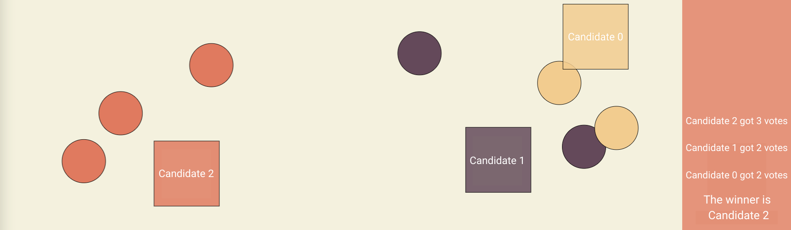

We analyzed four voting systems and their benefits in day-to-day use. You can test them yourself in our voting simulator. Definitions of common voting terms and more information about the systems can be found in the resources page.
The first system is
Plurality
Plurality voting, commonly known as First Past the Post, is the most common voting system. It is used everywhere in the world, in all sorts of situations. In the United States, people are pushing for Plurality to replace the Electoral College system (The National Popular Vote Interstate Compact).
How to Count
Voters vote for one (1) candidate each, and the candidate with the most votes wins.
| Pros | Cons |
|---|---|
| Requires only one choice | Forces voters to make one decision |
| Always picks the candidate with the most overall votes | Causes strategic voting |
| Counting is easy and fast | Vulnerable to spoiler effect |
Conclusion
This method is the best for any situation involving only two candidates. All other systems eventually use Plurality in two candidate elections.
The winning candidate is generally the one nearest to the biggest cluster of voters, regardless of its proximity to all of the voters overall. Below, the majority of voters are on the right side, yet Candidate 2, which is isolated in the left, is the winner. This is because both Candidate 0 and Candidate 1 are on the same side. This causes the votes to be split among the two, allowing Candidate 2 to win.
